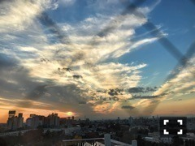

| 2016/11 17 Thu | 斎藤ちはる 東京の夕焼け。 |
ちはるーむへようこそ。
#chihashot

"東京の夕焼けは少しだけ
窮屈そうだけど
思っていたよりもずっと
綺麗なオレンジ色なんだね"
back numberさんのこの曲に
ぴったりな写真が撮れました。
大学の窓からこんな素敵な景色が広がっていて
バルコニーに出たかったけど
緊急時しか出られなかったので
窓の黒い線が写っていますが...
敢えて窮屈な東京感が出た気がします。
気付いたけど私...
夕焼けや朝焼けの、
オレンジ色と青色が
混ざった空が好きなんだなあ。
どこか寂しそうで、
何かが終わってしまいそうで、
儚げな感じ。
私が一番お気に入りなお花の写真！
上手く撮れた気がします(﹡ˆ ˆ﹡)
最近は家にお花を飾っています。
今までは観葉植物のみだったけど
お花のある生活はやはり華やかになります。
綺麗なものが身近にあると
心が豊かになれるよね！
いつか写真展を開きたい。
#chihashot でした。
-------------------------♡
♬ ChihaMusic
「Flowerwall」米津玄師さん
最初に聞いた時から
あ、この曲好き。って思った。
ずっと聞いていたくなるような
居心地の良い曲で、
世界観もとても綺麗。
美しくて幻想的。
"フラワーウォール
目の前に色とりどりの花でできた
壁が今立ちふさがる
僕らを拒むのか何かから守るためなのか
解らずに立ち竦んでる"
花でできた壁。
綺麗だからこそ恐ろしくも思える。
見えるものだけではなく
見えないものにも気付かなきゃ。
髪伸びたくん。
握手会がまたまた完売出まして、
残すところあと、
3/12の5部のみになりました。
本当にありがたいし嬉しい。
今までだったらこのスピードは無かったよ。
いつもありがとうございます...ヽ(；；)丿
3/12は16thラストの日の、ラストの5部。
思い出深いものになるといいなあ( ´ｰ`)♪
皆さんと沢山お話しできますように！
楽しみにしています◎
おやすみ〜
斎藤ちはる